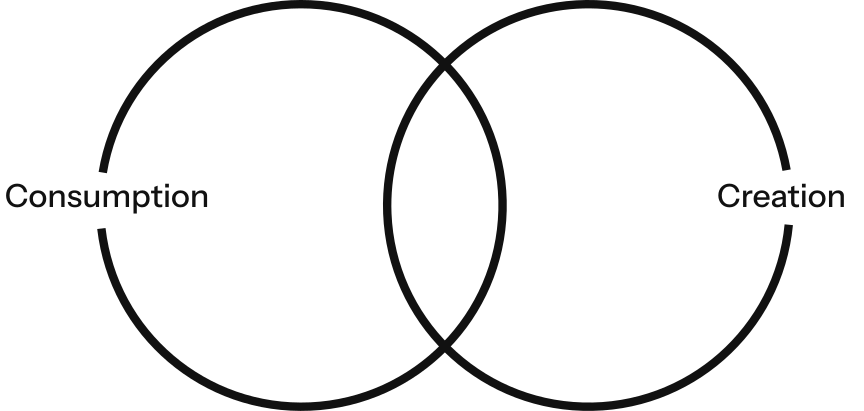
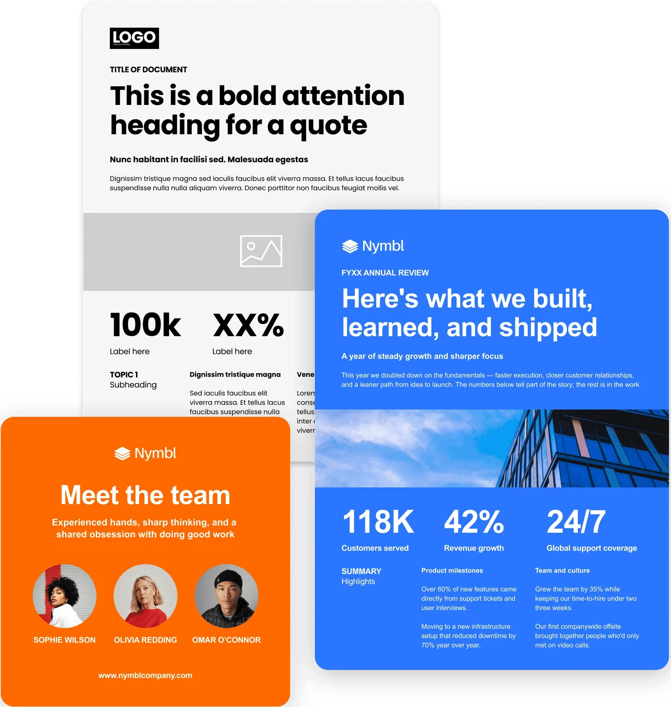
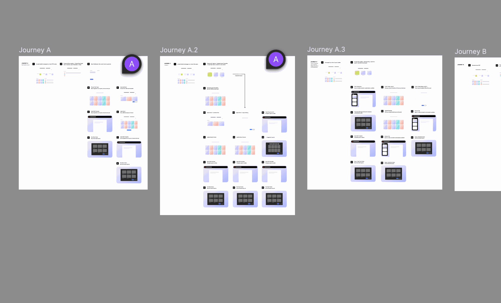

Too many choices
A wall of designs to browse creates hesitation before anything gets made
Smart Layouts
Bringing proven Express layouts into Acrobat to move users from consumption to creation

Most people open Acrobat to read and review, not to create. Smart Layouts brings Adobe Express’s proven layouts into Acrobat so small business owners can turn their existing content into on-brand, production-ready designs without starting from a blank page.
7 Months

 Amal ShaheediProduct Design
Amal ShaheediProduct Design James IhezueContent Strategist
James IhezueContent StrategistThe use case
Based on our findings, we focused on business professional Acrobat users, honing in on small business owners.

Opportunity

Problem
A wall of designs to browse creates hesitation before anything gets made
Not knowing what fits their task means wasted effort and second-guessing
Free-form generation drifts off-brand, and generic templates carry none of the user’s brand
Solution
Users get on-brand content with refined structure and hierarchy, skipping the decision making

What’s already working
Across Express research, business communicators consistently want skeletal, professional layouts they can adapt, not bright, finished designs that are off-brand.
They expect skeletal layouts, and describe the ones they’d actually use for work as simple, clean, easy and adaptable
Distinct boxes and defined sections signal how a layout can be reused across different scenarios and use cases
Research
We mapped out several possible user journeys and identified which ones made the most sense to move forward with.

Final prototype
A clickable prototype that brings the efficiency of Smart Layouts to life for small business users. It shows how teams can move from an existing file or a wireframe (layout) state to on-brand, production-ready content.
Designed in Figma, engineered in Cursor/Claude